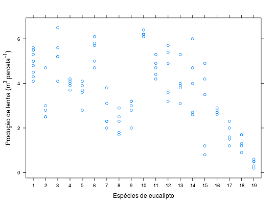

Grupo de dois experimentos com espécies de eucaliptos realizados pela Companhia Paulista de Estradas de Ferro (Pimentel-Gomes e Guimarães, 1958). Ambos os ensaios, localizados lado a lado no campo, tinham 10 espécies, em 5 blocos casualizados. Uma única espécie (Eucalyptus saligna) ocorria em ambos os experimentos.
Um data.frame com 100 observações e 4 variáveis, em
que
experblocespecprodPIMENTEL-GOMES (2009), Tabela 17.3.1, pág. 317.
library(lattice) data(PimentelTb17.3.1)#> Warning: data set ‘PimentelTb17.3.1’ not foundstr(PimentelTb17.3.1)#> 'data.frame': 100 obs. of 4 variables: #> $ exper: Factor w/ 2 levels "1","2": 1 1 1 1 1 1 1 1 1 1 ... #> $ bloc : Factor w/ 5 levels "1","2","3","4",..: 1 2 3 4 5 1 2 3 4 5 ... #> $ espec: Factor w/ 19 levels "1","2","3","4",..: 1 1 1 1 1 2 2 2 2 2 ... #> $ prod : num 5.3 4.8 5.5 5.5 4.3 3 2.8 4.7 2.5 2.5 ...ftable(xtabs(~exper + bloc + espec, data = PimentelTb17.3.1))#> espec 1 2 3 4 5 6 7 8 9 10 11 12 13 14 15 16 17 18 19 #> exper bloc #> 1 1 1 1 1 1 1 1 1 1 1 1 0 0 0 0 0 0 0 0 0 #> 2 1 1 1 1 1 1 1 1 1 1 0 0 0 0 0 0 0 0 0 #> 3 1 1 1 1 1 1 1 1 1 1 0 0 0 0 0 0 0 0 0 #> 4 1 1 1 1 1 1 1 1 1 1 0 0 0 0 0 0 0 0 0 #> 5 1 1 1 1 1 1 1 1 1 1 0 0 0 0 0 0 0 0 0 #> 2 1 1 0 0 0 0 0 0 0 0 0 1 1 1 1 1 1 1 1 1 #> 2 1 0 0 0 0 0 0 0 0 0 1 1 1 1 1 1 1 1 1 #> 3 1 0 0 0 0 0 0 0 0 0 1 1 1 1 1 1 1 1 1 #> 4 1 0 0 0 0 0 0 0 0 0 1 1 1 1 1 1 1 1 1 #> 5 1 0 0 0 0 0 0 0 0 0 1 1 1 1 1 1 1 1 1xyplot(prod ~ espec, data = PimentelTb17.3.1, ylab = expression("Produção de lenha"~(m^3 ~ parcela^{-1})), xlab = "Espécies de eucalipto")